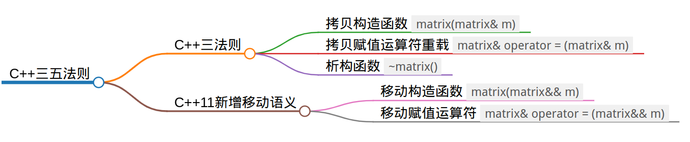

我们先来看一个matrix类在C++中如何实现：
class matrix { |
首先定义字段，在matrix中定义了行数nrow和列数ncol，以及指向存储数据的指针value。然后定义构造函数matrix int r, int c)。由于matrix有一个指针字段value，指向的数据需要在堆上动态分配，所以matrix类型的对象在拷贝时需要注意深浅拷贝的问题，在栈上对象离开作用域则需要考虑析构的问题，所以我们还需要显式地或隐式地指定了matrix类型的对象在拷贝、赋值和销毁时的行为。
三五法则
一个类通过定义三种特殊的成员方法来控制这些操作：
- 拷贝构造函数
- 拷贝赋值运算符
- 析构函数
我们将这些操作称为拷贝控制操作，由于拷贝控制操作是由三个特殊的成员函数来完成的，所以我们称此为“C++三法则”。在较新的C++11标准中，为了支持移动语义，又增加了移动构造函数和移动赋值运算符，这样共有五个特殊的成员函数，所以又称为“C++五法则”。也就是说，“三法则”是针对较旧的C++89标准说的，“五法则”是针对较新的C++11标准说的。为了统一称呼，后来人们把它叫做“C++三/五法则”。

加上这五个成员方法后matrix定义如下：// matrix.h
class matrix
{
private:
int nrow, ncol;
double* value;
public:
matrix(int r, int c, double v = 0);
matrix(std::initializer_list<std::initializer_list<double>> list);
matrix(matrix& m);
matrix(matrix&& m);
~matrix();
matrix& operator = (matrix& m);
matrix& operator = (matrix&& m);
};
构造函数：// matrix.cpp
matrix::matrix(int r, int c, double v): nrow(r), ncol(c)
{
std::cout << "construct" << this << std::endl;
value = new double[r * c];
for (int i = 0; i < r * c; i++) {
value[i] = v;
}
}
matrix::matrix(initializer_list<initializer_list<double>> list) {
std::cout << "construct" << this << std::endl;
nrow = list.size();
ncol = list.begin()->size();
value = new double[nrow * ncol];
int i = 0;
for (auto rowit = list.begin(); rowit != list.end(); rowit++) {
for (auto it = rowit->begin(); it != rowit->end(); it++) {
value[i++] = *it;
}
}
}
拷贝构造函数
拷贝构造函数定义了当用同类型的另一个对象初始化新对象时做什么。拷贝构造没有显示定义时，编译器会隐式定义一个默认的拷贝构造函数，对栈上成员逐字节拷贝。
如果类的成员变量含有指向堆的指针，一般就需要手动实现拷贝构造函数：
// matrix.cpp |
拷贝构造的确定的调用场景：
显式地从左值对象构造新对象
matrix a;
matrix b(a);初始化新对象，使用左值对象向其赋值：
matrix a;
matrix b = a;可以看作是将左值引用
a绑定到构造结果上。
拷贝赋值运算符
拷贝赋值运算符定义了将一个对象赋予同类型的另一个对象时做什么。赋值运算符只能重载为成员，不能重载为友元。
// matrix.cpp |
拷贝赋值确定的调用场景：
- 给左值对象赋左值
matrix a, b;
a = b;
析构函数
析构函数定义了此类型的对象销毁时做什么。在析构函数中往往需要手动销毁堆上数据。// matrix.cpp
matrix::~matrix() {
delete[] value;
}
- 一般来说不能私有化(
private)或者~matrix() = 0屏蔽析构函数，这会导致对象无法被销毁，即：栈上定义对象会编译错误。但是可以使用new在堆上分配对象
移动构造函数
移动构造是从一个临时对象（右值引用）中构造对象。移动构造往往是写成浅拷贝，直接复制临时对象的指针成员，并将原来的指针置为nullptr。// matrix.cpp
matrix::matrix(matrix&& m):ncol(m.ncol), nrow(m.nrow) {
std::cout << "move construct " << this << std::endl;
value = m.value;
m.value = nullptr;
}
移动构造发生在：
将函数返回值绑定到新定义的对象上
matrix a = matrix::zero(3);
使用函数返回值显式的初始化对象
matrix a(matrix::zero(3))
由于
matrix::matrix(matrix&& m)被定义，所以移动构造会优先使用该方法。如果matrix::matrix(matrix&& m)未定义，则会寻找常引用参数的拷贝构造matrix::matrix(const matrix& m)，如果拷贝构造参数不为常引用，则找不到合适的构造方法，编译器报错。
移动赋值运算符
移动复制运算符定义了将一个临时右值对象赋予同类型的另一个左值对象时做什么。和移动构造同理，一般也是浅拷贝。// matrix.cpp
matrix& matrix::operator = (matrix&& m) {
std::cout << "move assign operator " << this << std::endl;
if(this != &m) {
nrow = m.nrow;
ncol = m.ncol;
value = m.value;
m.value = nullptr;
}
return *this;
}
移动赋值发生在：
- 将函数返回值赋给初始化后的左值对象
matrix a;
a = matrix::zero(3);
由于
matrix& matrix::operator = (matrix&& m)被定义，所以移动赋值运算符会优先使用该方法。如果matrix& matrix::operator = (matrix&& m)未定义，则会寻找常引用参数的拷贝赋值matrix& matrix::operator = (const matrix& m)，如果拷贝赋值参数不为常引用，则找不到合适的赋值方法，编译器报错。
- 五种方法的实现往往是同时的，即要么都要实现，要么都不用实现，关键是判断类中是否出现了指针类型的成员。如果类中出现了指针类型的成员，往往需要同时实现五种方法来区分深浅拷贝，反之五种方法都可以使用默认实现。
拷贝 VS 移动
声明一个静态成员函数用于创建零矩阵：// matrix.cpp
// 创建零矩阵
matrix matrix::zero(int n) {
return matrix(n, n, 0);
}
他会调用一个matrix(int, int, int)构造函数然后返回。在main()中调用这个函数观察对象的生命周期：// main.cpp
int main() {
matrix E = matrix::zero(2);
return 0;
}
拷贝构造
如果取消移动构造的手动实现，仅保留拷贝构造，在Linux上用g++ -fno-elide-constructors -std=c++11编译，输出如下：$ g++ matrix.cpp main.cpp -fno-elide-constructors -std=c++11 -o main && ./main
construct 0x7ffc8b9b8eb0
copy construct 0x7ffc8b9b8f00
destruct 0x7ffc8b9b8eb0
copy construct 0x7ffc8b9b8ef0
destruct 0x7ffc8b9b8f00
destruct 0x7ffc8b9b8ef0
全程共1次构造（涉及堆上空间分配），2次拷贝构造（深拷贝，涉及堆上空间分配）。该情况下出现两次深拷贝，如果对象特别大，就容易产生性能问题。
matrix::zero(int)中首先调用了matrix::matrix(int, int, int)构造了一个匿名的右值matrix对象0x7ffc8b9b8eb0，然后return复制这个右值对象时发现只能绑定拷贝构造的参数（const matrix&可以绑定matrix&&），创建了一个新的临时对象0x7ffc8b9b8f00，随后原先的0x7ffc8b9b8eb0随着函数返回析构，而0x7ffc8b9b8f00作为右值被返回，返回值在main()中被用于构造E对象0x7ffc8b9b8ef0，函数调用返回值0x7ffc8b9b8f00和0x7ffc8b9b8ef0随着main()函数的结束被析构。
取消移动构造的实现不是指
= default，显示声明默认实现实际上制定的行为是快拷贝，会导致原有的指针不被置为nullptr，从而出现double free编译选项
-fno-elide-constructors可以禁止编译器优化构造函数，需要注意的是，这个选项只在C++11前有效，C++17及以后必须要求编译器开启构造函数优化，该选项已经不起作用。
移动构造
移动语义指的就是将其他对象（通常是临时对象）拥有的内存资源“移为已用”。这里有些类似Rust中Move的概念，区别是Rust中Move会屏蔽原有的对象，在编译阶段做检查；而C++则需要手动去实现移动构造，把原对象的指针成员置空，移动构造完成后的远对象也不能再去使用。
恢复之前写的移动构造，继续使用-fno-elide-constructors -std=c++11选项编译运行，输出如下：$ g++ matrix.cpp main.cpp -fno-elide-constructors -std=c++11 -o main && ./main
construct 0x7ffc3393b6b0
move construct 0x7ffc3393b700
destruct 0x7ffc3393b6b0
move construct 0x7ffc3393b6f0
destruct 0x7ffc3393b700
destruct 0x7ffc3393b6f0
全程共1次构造（涉及堆上空间分配），2次移动构造（浅拷贝，使得原有指针失效，无堆上空间分配），相较之前拷贝构造的场景大大提升了性能。
matrix::zero(int)中首先调用了matrix::matrix(int, int, int)构造了一个匿名的右值matrix对象0x7ffc3393b6b0，然后return这个对象调用了移动构造，创建了一个新的临时对象0x7ffc3393b700，随后原先的0x7ffc3393b6b0随着函数返回析构，而0x7ffc3393b700作为右值被返回，返回值在main()中被用于构造E对象0x7ffc3393b6f0，函数调用返回值0x7ffc3393b700和0x7ffc3393b6f0随着main()函数的结束被析构。
RVO
如今的编译器往往都对上述场景做了优化，无论是否声明移动构造，如果不指定-fno-elide-constructors，编译器会默认开启RVO(Return Value Optimzation)，编译器会去除获取对象返回值时候重复的构造、移动和析构，全程只有一次构造和析构，这种情况下输出如下：$ g++ matrix.cpp main.cpp -o main && ./main
construct 0x7ffdb5e53ce0
destruct 0x7ffdb5e53ce0
当类中同时包含拷贝构造函数和移动构造函数时，如果使用临时对象初始化当前类的对象，编译器会优先调用移动构造函数来完成此操作。只有当类中没有合适的移动构造函数时，编译器才会退而求其次，调用拷贝构造函数。 所以一般拷贝构造参数声明为const，这是因为常左值引用是万能引用，可以绑定右值。
实际开发中一般定义移动构造时也会定义拷贝构造，对于右值使用移动构造，对于左值使用拷贝构造。如果想将左值也用于移动构造，可以使用std::move()把左值强转为右值，被std::move()调用后参与移动构造的对象将会失效，要避免使用被移动过的对象，以免产生不可预料的后果。
std::string str = "Hello World"; |
一般拷贝构造和移动构造都存在的时候，std::move()存在的意义是显式指定一个对象进行移动构造来提升性能。
完整代码见：http://github.com/XUranus/demo/c++/matrix